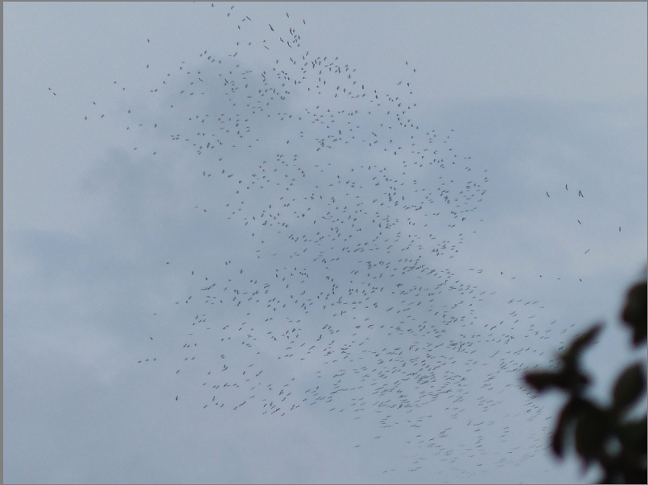
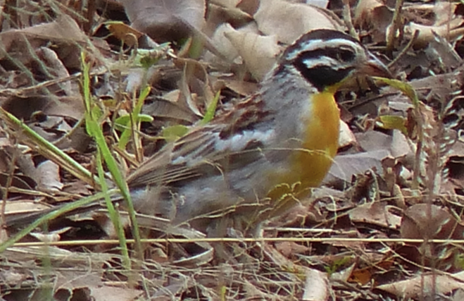

From: Brian Finch <birdfinch@gmail.com>
Date: 2015-38-30 19:03
Subject: follow up to visible migration this morning
Dear All,
Further to my email this morning on visible migration from my time in
our paddock from 6.40-10.45am (apart from breakfast), I returned again
at 3.00pm staying until 5.00pm. It was again interesting and gave me
good reasons why birders should both look UP whilst birding and of
course the importance of looking DOWN. (See attached).
The first Eurasian Hobby came through, and there were six falcons very
high that were quite likely Amurs. Barn Swallow passage E, the huge
flock of White Pelicans was followed by a smaller flock a haf-hour
later, all heading W to the Rift. Four Tree Pipits were down feeding
but probably were entirely different to the passage birds this
morning. Both of the winter resident Common Buzzards were still
present. Needless to say the DOWN bird was a first for here, there has
only been one NNP record and that in the great drought four years ago,
and only one other Nairobi county record,
Best for now
Brian

